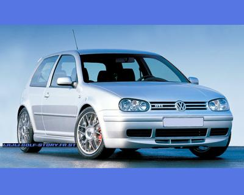

Golf 4 gti
La Volkwagen Golf GTI de 4ème génération continue de porter le nom de sa mythique ancêtre apparue en 1976. Pourtant, si les lettres restent, l'esprit y est de moins en moins...
Esthétiquement, l'héritière de l'emblématique Golf GTi, 4ème génération,
cultive comme l'ensemble de la famille Volkswagen, un certain art de la sobriété...
Certes joliment présentée, les détails extérieurs qui lui sont spécifiques (jantes alliage 16" et quoi d'autre ?...)
Même si la GTI affiche aujourd'hui 150 chevaux et utilise pour la première fois un moteur turbocompressé, elle pèse plus de 1300 Kg,
en partie dûs à l'augmentation pléthorique des équipements et des insonorisants.
En conclusion, si son moteur turbo s'en tire assez bien au niveau des performances, bien que trop linéaire et gourmand, à la conduite cette Golf GTI
